Prescribed Fire Mapping - Harnessing drones, AI, and GIS to unlock the science of fire
At GeoFly Lab, we harness cutting-edge drone technology to better understand wildfire behavior and support prescribed fire research. Partnering with CAL FIRE and the Wildfire Interdisciplinary Research Center (WIRC), our team deploys thermal, multispectral, and LiDAR-equipped drones to collect high-resolution data before, during, and after fire events. These tools allow us to capture fire dynamics that are often invisible to the human eye, providing a new perspective on how wildfires ignite, spread, and interact with the landscape.
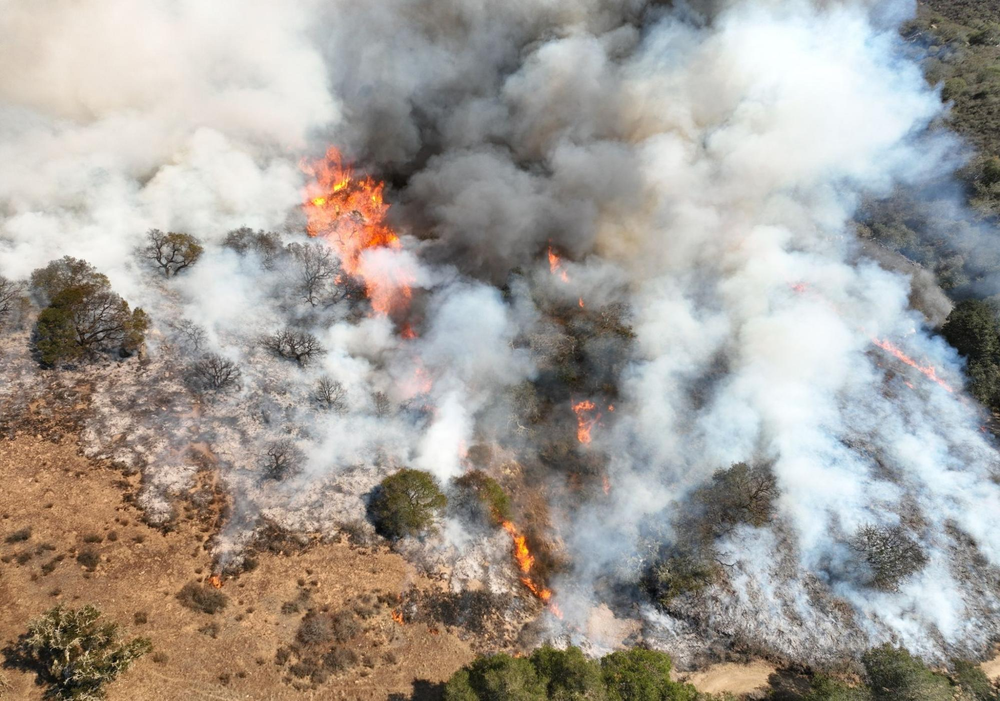
Data collection is led by M.A. GIS and Geography student Owen Hussey, who coordinates drone flights and field campaigns, ensuring safe and efficient deployment in challenging fire environments. Data analysis is led by Dr. Xiangyu Ren, who specializes in geospatial modeling and applies AI and GIS methods to transform raw imagery into actionable fire science insights. This collaborative framework bridges student training with advanced research leadership.
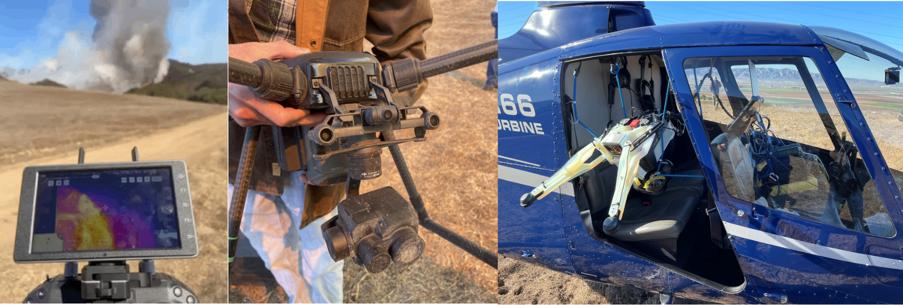
During prescribed burns, our thermal drones penetrate dense smoke and capture the structure of active fires in real time. These geo-referenced thermal videos reveal flame intensity and spread patterns at fine spatial scales, while also integrating with GIS-based models. By combining thermal imagery with land-use classifications (fuel type), elevation data, and wind measurements, we can build dynamic models that simulate fire progression and improve predictive capacity. The thermal drone data also serve as training datasets for AI models, enabling automated detection and analysis of fire fronts and behavior.
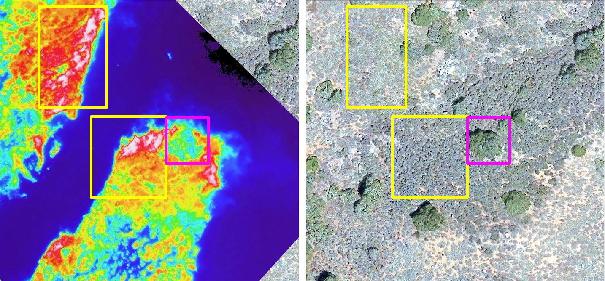
We are also developing AI-driven computer vision models to automatically detect the fire head during active burns. Firefighters on the ground often cannot see through smoke, making it difficult to locate fire fronts and assess intensity. By training AI algorithms on thermal drone video, we can identify fire structures in real time, providing firefighters with precise information on where the fire is moving. This capability has the potential to guide firefighting efforts more safely and effectively, offering real-time situational awareness that ground crews would not otherwise have.
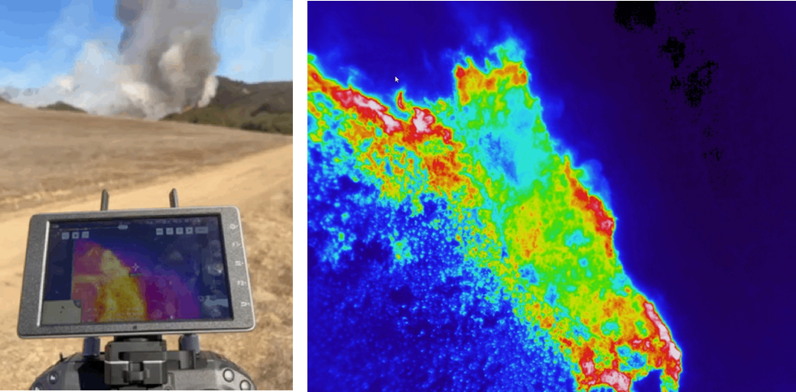
Our LiDAR drone sensors add another dimension by mapping fuel volume and measuring fuel changes before and after burns. This enables precise quantification of vegetation structure and fire impact across landscapes. Meanwhile, multispectral sensors—including near-infrared (NIR) bands—capture vegetation health and allow us to track time-series changes in ecosystem recovery and burn severity. These measurements provide vital insights into how prescribed fire reshapes vegetation patterns and fuel dynamics.
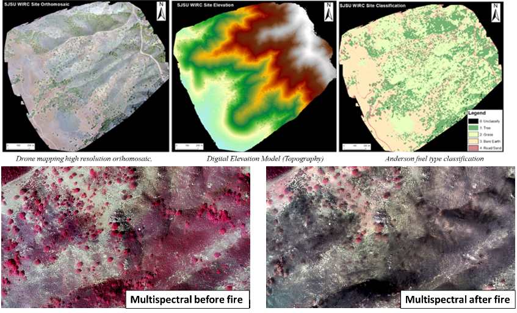
Together, our thermal, LiDAR, and multispectral drone systems—complemented by weather tower data and high-resolution RGB imagery—create a powerful multi-sensor platform. By combining UAV-based data with GIS, AI, and fire modeling, GeoFly Lab delivers insights that not only enhance prescribed fire management but also advance broader strategies for wildfire resilience. See our storymap about the Canyon Fire Experiment and 3D visualization of study canyon.
The Home Ignition Zone (HIZ) project is a collaborative effort between the GeoFly Lab and the Wilkin Fire Ecology Lab. Building on earlier “boots-on-the-ground” surveys of HIZ conditions, we are now using drones and remote sensing to scale up assessments across communities. This transition from traditional field evaluations to advanced geospatial tools allows us to create faster, more consistent, and more scalable methods for understanding wildfire risk around homes.
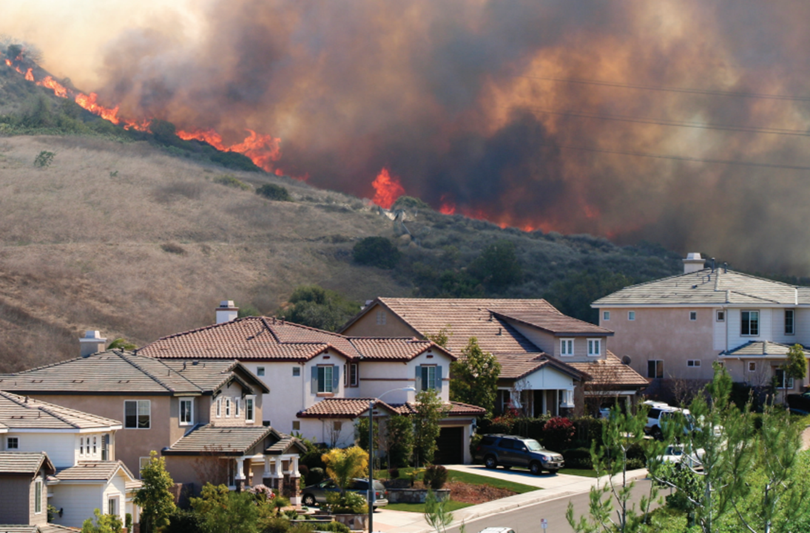
Our fieldwork is led by M.A. Geography student researcher Henri Brillon, who coordinates site evaluations and integrates community-level surveys with geospatial data collection. Working with residents and local partners, Henri has been central in implementing HIZ field campaigns and ensuring that on-the-ground findings align with our drone and remote sensing analyses. Our research is closely integrated with the Wildfire Interdisciplinary Research Center (WIRC), CAL FIRE, and industry mentors through the NSF Industry–University Cooperative Research Center (IUCRC) program. By working with both academic and industry partners, we ensure that our science is directly linked to practical applications in insurance, utility management, and state wildfire planning.
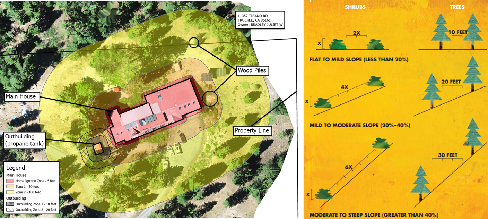
Research sites include fire-impacted and high-risk communities such as Paradise, Tahoe Donner, and Santa Cruz. At these sites, we collect high-resolution drone imagery and thermal data to map vegetation, building materials, and potential ember pathways. These datasets are combined with NASA satellite time series and Google Street View imagery to generate a multi-scale view of fire risk. By aligning drone outputs with curb-side and full property evaluations, we capture details often overlooked by standard defensible space inspections, such as vent mesh size or gaps in construction materials.
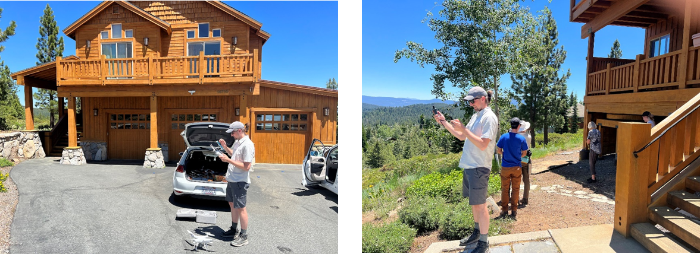
Community engagement is central to this project. Our team works directly with neighborhoods to discuss wildfire risks, home hardening strategies, and the barriers residents face in implementing mitigation. These conversations provide valuable social context to pair with the remote sensing data, ensuring that our recommendations are practical and community-specific.
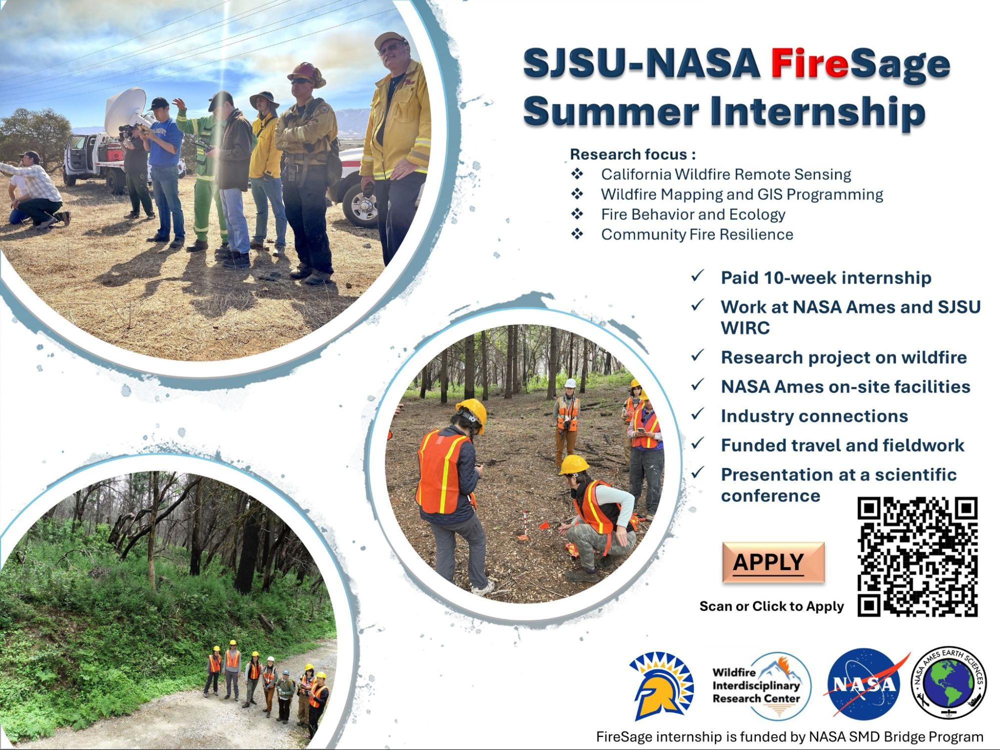
This project is also deeply connected to our NASA FireSage program, which trains students to analyze the drone and satellite data collected at HIZ sites. FireSage interns gain hands-on experience in thermal, multispectral, and LiDAR analysis while contributing to cutting-edge wildfire science. This integration of education and research ensures that our work not only advances science but also builds the workforce needed for future wildfire resilience.
Through this collaborative framework—linking NSF-IUCRC, NASA FireSage, WIRC, CAL FIRE, and local communities—our HIZ research delivers both scientific insight and actionable strategies. By combining drone data, satellite remote sensing, AI models, and human perspectives, we are creating a comprehensive platform to evaluate resilience before fire, support safer decision-making during fire, and inform long-term recovery after fire.
GeoFly Lab is leading post-burn research at San Vicente Redwoods (SVR), one of the most ecologically important coastal mixed evergreen forests in Northern California. Following the 2020 CZU Lightning Complex fire, our team, led by student assistant Melina Kompella, working in collaboration with partners at WIRC, NASA Ames, and San José State University—has been investigating how fire severity affects forest structure, aboveground biomass, and long-term recovery.
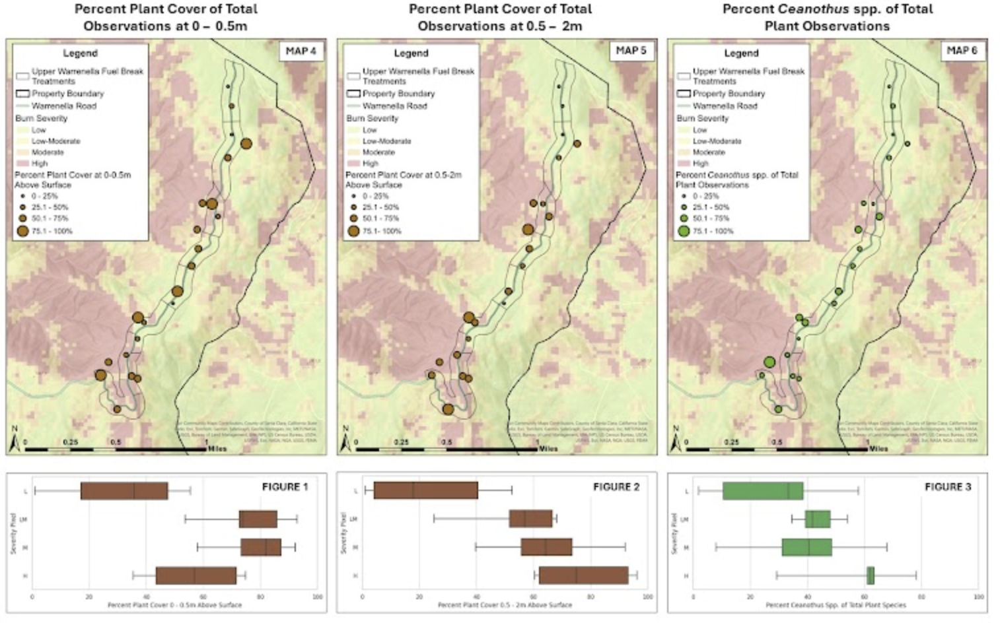
We integrate remote sensing, LiDAR, and Continuous Forest Inventory (CFI) plot data to assess burn severity and aboveground biomass loss across SVR. Using NASA GEDI LiDAR data and Sentinel-2 satellite imagery, we create burn severity maps and track changes in aboveground biomass before the fire, one year after, and three years after. These maps reveal clear links between fire severity and tree mortality, helping identify where forests are most vulnerable and where regrowth is occurring.
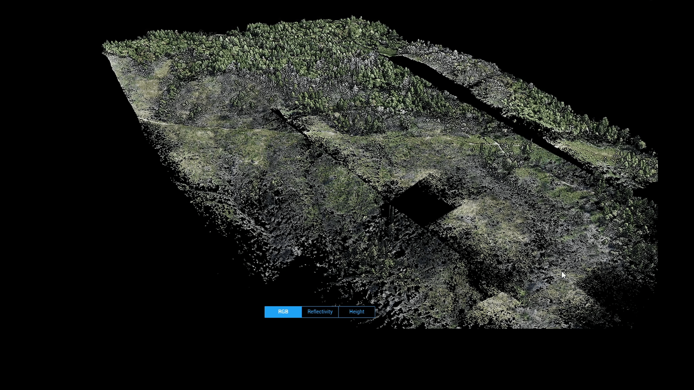
Drone-based multispectral and LiDAR surveys further complement satellite observations, capturing fine-scale changes in vegetation and canopy structure. This combination of field measurements and geospatial data allows us to quantify biomass loss with high accuracy while also monitoring species-specific recovery. For example, coast live oak and Douglas-fir showed sharp mortality under high burn severity, while tanoak and madrone exhibited different resprouting dynamics in moderate burn zones.
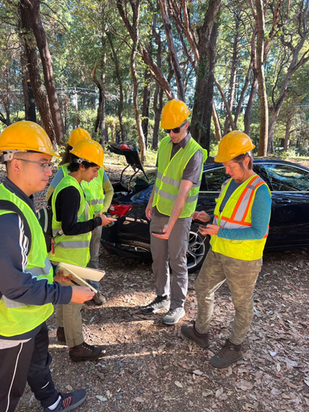
Post-burn management at SVR is more than monitoring damage—it is about informing strategies for resilience and carbon recovery. By linking field ecology, remote sensing, and fire science, our work provides critical data for land managers, conservation organizations, and policymakers to make informed decisions on forest restoration and carbon management in the Santa Cruz Mountains.
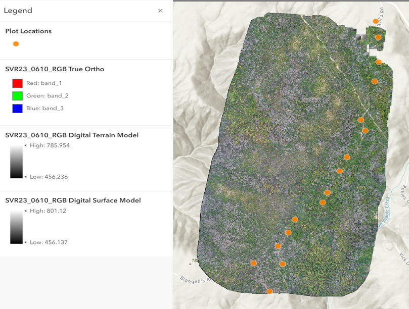
This project also serves as a training ground for students through the NASA FireSage program, where interns and graduate researchers analyze drone and satellite datasets to study wildfire impacts. Through this integration of research and education, GeoFly Lab is helping develop the next generation of scientists equipped to tackle California’s wildfire challenges.